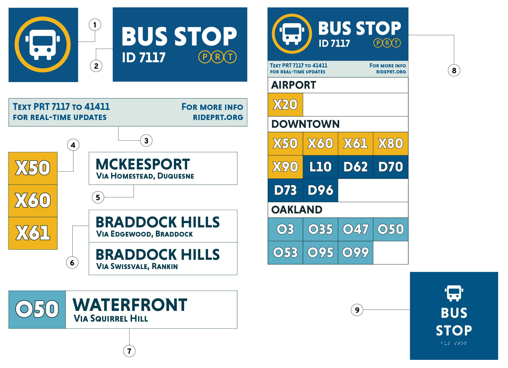
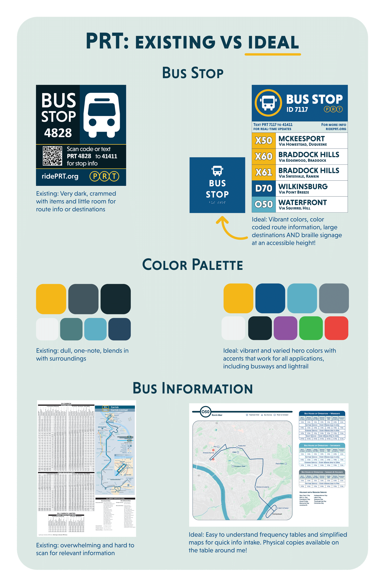

anatomy of a bus stop
With a rebrand fresh in the public's mind and an ambitious project to completely reroute the bus lines, Pittsburgh Regional Transit has an opportunity to create a whole new system of legible signage. In an era of transitions, how can we leverage colors, icons, and existing rider habits to reflect these major changes?
TIME: jan 2025 - may 2025
ROLE: brand identity, wayfinding, print
TOOLS: adobe suite


bus stop breakdown
the Bus Line Redesign project seeks to reformat how buses run through the city. there is a strong emphasis on interconnectivity between neighborhoods and better utilization of busways and newly constructed stations. my work focuses on how we could transition from the current system to a new one that welcomes old and new riders alike. i prioritized legibility and accessibility.
(1) recognizable iconography: the bus icon paired with a gold ring instantly makes any sign identifiable as a PRT stop. this makes the stop accessible to rider who may not speak english or be able to read. the ring also ties in PRT's new brand, differentiating it from other transit agencies that service the area.
(2) clear heading: another instant identifier of what the sign is. a clear stop id also serves to help those who get bus ETAs via text.
(3) contact information: this allows a quick and easy way to find when buses will arrive for new riders, as well as direct them to more information provided they have a device connected to the internet. this section can be expanded upon with more information as needed.
(4) color-coded bus line: under PRT's Bus Line Redesign project, every route will have a letter and number identifier associated with where it goes in the city. Pair this with a thematic yet distinct color and you have an easily scannable sign for new and seasoned riders alike. In this example, it's clear that these 3 lines use the expressway, denoted by an X and the yellow color.
(5) bus line label: every route in this sign format gets a written label of neighborhoods it services. this allows riders new to the city - or new to their desired destination - enough information to make an informed decision on which bus to take. this is especially helpful for those without access to information online or at stops that don't have real-time data.
(6) intuitive information grouping: many buses may terminate in the same neighborhood and should be placed together so that riders can quickly discern their options or discover new routes through the city.
(7) a standard bus line unit: in this format, every bus that services a stop gets equal and appropriate real estate on the sign. this provides enough information to discern where it came from, where it's going, and how it will get there, as well as alternate options.
(8) alternative layout: for stops serviced by more than 8 routes, an alternate layout allows more lines to be displayed and organized. this does not have as much information per line, but still allows riders to quickly understand their options. ideal for locations in oakland and downtown with major route overlap.
(9) standard braille signage: every stop should be fitted with a braille sign below either aformentioned layout to make stops more accessible to blind riders. this sign should, at the very least, include the words bus stop and the stop's ID number.
before and after
here is a quick overview of the major changes between PRT's current wayfinding and my work. these changes were made with their Bus Line Redesign project in mind.
collateral
a new trifold timetable and map condenses schedule info and provides up to date explanations of the fare system. these pamphlets are invaluable to riders who don't or can't use a device to look up information on the bus system. many older riders depend on these as their main source of PRT information and it's imperative they are easy to read and understand.
in an effort to aid current riders in the transition from old to new, personalized postcards and other advertisements can help explain route changes in better detail. in this example, an address serviced by the current 71D would be mailed a postcard about local changes. this is in addition to PRT's existing website reflecting the same changes.